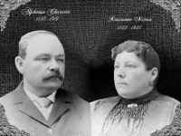
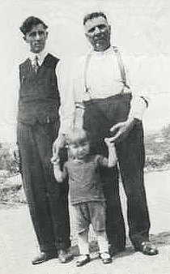

Toujours basé sur les données
transmises par le Frère Jean-Benoît Charette, généalogiste, voici les seize enfants de Jacques Charette et de Théotiste Dubois,
dont deux couples de jumeaux.
Les données ont été complétées avec les actes de baptême et de
mariage trouvés dans le Fonds numérisé Drouin.
 Charles, né
le 16 avril 1837 à St-Jérôme, comté Terrebonne. Ses parrains sont
Joseph Dubois et Marguerite Varin, son grand-père maternel et sa
grand-mère paternelle..
Charles, né
le 16 avril 1837 à St-Jérôme, comté Terrebonne. Ses parrains sont
Joseph Dubois et Marguerite Varin, son grand-père maternel et sa
grand-mère paternelle..
 Julienne,
née le 7 avril 1839 à St-Jérôme. Ses parrains sont Joseph Dubois et
Charlotte Papineau, ses grands-parents maternels. Elle se marie le 21 novembre 1865 à St-Sauveur avec Augustin Goyer,
veuf d'Angélique Lauzon. Julienne,
née le 7 avril 1839 à St-Jérôme. Ses parrains sont Joseph Dubois et
Charlotte Papineau, ses grands-parents maternels. Elle se marie le 21 novembre 1865 à St-Sauveur avec Augustin Goyer,
veuf d'Angélique Lauzon.
Olympe,
née le 9 mai 1842 à St-Jérôme. Ses parrains sont Pierre Dubois et Marie
Charette. Elle se marie le 5 février 1861 à St-Sauveur avec Pierre
Laurin, fils de Pierre et de Marie Nadon.
Célina, née le 19
août 1844 à St-Jérôme. Ses parrains sont Jean-Baptiste Gareau et
Thérèse David. Elle se marie le 5 juillet 1869 à St-Jérôme avec
Maximim Mathe, fils de Nicolas et d'Angélique Deschamps.
Olive, née le 7 août
1846 à St-Jérôme. Ses parrains sont Pierre Cousineau et Apolline
Martineau. Elle se marie le 21 septembre 1868 à St-Sauveur avec
Napoléon Paradis, fils de Jean-Baptiste et de Flavie Legault..
Herméline, jumelle,
née le 4 septembre
1849 à St-Jérôme. Ses parrains sont Jean-Marie David et Angèle Cyr.
Godfroy, jumeau,
né le 4 septembre 1849
à St-Jérôme. Ses parrains sont Pierre Charette et Olive Vézina. Il
décède le 29 septembre 1849.
Alphonse, né le 14
septembre 1850 à St-Jérôme. Ses parrains sont Jean-Baptiste Bériault
et Rosalie Charette. Il se marie le 25 février 1873 à St-Joseph de
Montréal avec Rosianne Miron, fille de Antoine et d'Angèle Picotte.
|
Alphonse
est notre ancêtre de la 8ème génération,
cliquez sur le lien Les 14 générations, dans la
bannière
pour accéder au site qui lui est consacré |

|
Euphrosine, née
le 27 juillet 1852 à St-Jérôme. Ses parrains sont Pierre Charette et
Pauline Godard.
Léocadie, née
le 25 juin 1854 à St-Sauveur-des-Monts. Ses parrains sont François
Gravel et Angélique Deschatelets. Elle y décède le 21 mai 1860.
Jacques, né le 28 mai
1856 à St-Sauveur-des-Monts. Ses parrains sont Octave Marier et
Victoire Éthier. Il se marie le 18 septembre 1877 à
St-Henri-des-Tanneries avec Mathilda Ouimet, fille de Magloire et de
Marie Archambault. Mathilda était née le 1 janvier 1858 à Ste-Rose.
Ses parrains étaient Antonio Ouimet et Geneviève Dufour.
|

Mathilda Ouimet,
épouse de Jacques
|

Albina, fille de Jacques,
née le 5 novembre 1883
|
Edesse, jumelle,
née le 7 mars 1858 à St-Sauveur-des-Monts. Ses parrains sont Pierre
Bélanger et Angélique Cyr. Elle se marie le 20 octobre 1879 à
St-Henri-des-Tanneries avec Joseph Bouffard, fils de François et de
Marcelline.
Joseph, jumeau,
né le 7 mars 1858 à
St-Sauveur-des-Monts. Ses parrains sont Joseph Montigny et Desanges
Gravel. Il y décède le 11 août 1858.
Hélène, née le 2
janvier 1861 à St-Sauveur-des-Monts. Ses parrains sont Pierre Audet et
Sophie Charette. Elle se marie le 2 novembre 1889 à St-Henri avec Henri
rousseau, fils d'Octave et de Julie Lussier. L'époux est cultivateur à
Whitinsville, Massachusetts. On peut présumer qu'Hélène a vécu aux
États-Unis. Nous savons que notre ancêtre Alphonse recevait de la
"visite des États", il s'agissait probablement de sa sœur
Hélène, et sa famille.
Joseph-Henri, né
le 25 avril 1863 à St-Sauveur-des-Monts. Ses parrains sont Pierre
Imbault et Julienne Charette. Il se marie le 10 octobre 1887 à
St-Sauveur-des-Monts avec Sarah
Brière, fille de Joseph et de Sarah Labelle. Puis il se remarie le 4
mai 1907 à St-Henri-des-Tanneries avec Léa Vaillancourt, fille de
Casimir et de Marie des Neiges Vaillancourt.
|
 |
Un internaute, satisfait d'avoir trouvé les
photos de notre site public de généalogie, surtout celle
d'Alphonse sr, nous a envoyé, en échange, la photo d'un des
frères d'Alphonse, Henri. Henri (le plus âgé)
pose avec son fils Agnus et son petit-fils Rolland. Henri
est l' arrière-arrière-grand-père de l'internaute en
question. |
Élisa, née
le 3 février 1865 à St-Sauveur-des-Monts. Ses parrains sont Benjamin
Charette et Marcelline Raymond dite Michaudville. Elle se marie le 18
octobre 1886
avec Samuel Rousseau, fils de Joseph et de Julie Lussier. (À
noter qu'Élisa signe son acte de mariage, fait rare à l'époque).

|